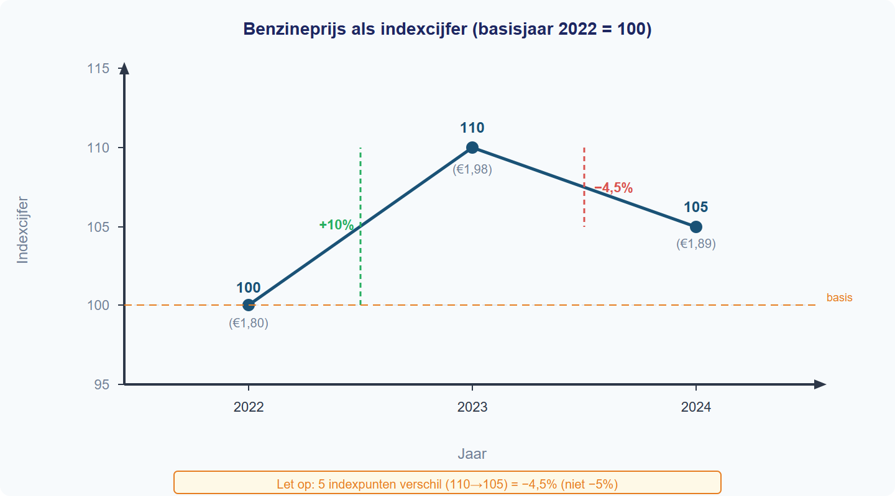
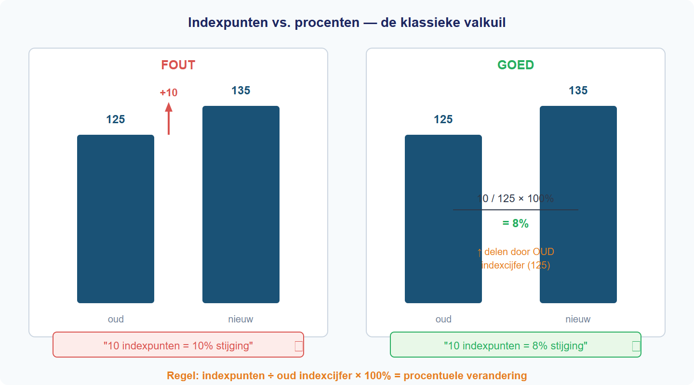

1.1.2 Percentages en indexcijfers - Begeleide inoefening
Begeleide inoefening
Werk elke opgave uit met dezelfde procedure. Schrijf bij elke berekening expliciet op wat oud en nieuw zijn.

1.1.2_we_1
Opgave A: Een prijs stijgt van EUR 600 naar EUR 648. Bereken de procentuele stijging.
Opgave B: Een mandje stijgt van EUR 120 naar EUR 150. Bereken het indexcijfer.
Opgave C: Een index stijgt van 125 naar 135. Bereken de procentuele verandering.
Antwoorden
Antwoorden begeleide inoefening
A: (648 - 600) / 600 x 100% = 8%.
B: 150 / 120 x 100 = 125.
C: (135 - 125) / 125 x 100% = 8%. Het verschil is 10 indexpunten.

1.1.2_fig_3